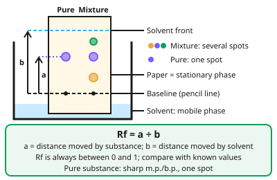

GCSE Chemistry · Topic 8
Chemical analysis
Chemical analysis is about identifying what substances are and how pure they are.
We will look at pure substances and formulations, paper chromatography and Rf values, and tests for common gases.
Then we use flame tests, precipitates and anion tests to identify unknown ions, and finish with instrumental methods like flame emission spectroscopy.
- 5 subtopics
- 241 questions
- Free: 8.1 notes and 10 questions
In this topic
- 8.1Purity, formulations and chromatographyFree below · 63 questions
- 8.2Identifying gases and ionsOpen in Full Marks · 65 questions
- 8.3Required practical: paper chromatography, Rf values and analysis of inksOpen in Full Marks · 65 questions
- 8.4Required practical: identifying unknown ions (flame tests, precipitates, anion tests)Open in Full Marks · 24 questions
- 8.5Instrumental methods and flame emission spectroscopyOpen in Full Marks · 24 questions
8.1 · Free notes
Purity, formulations and chromatography

Key points
- A pure substance is a single element or compound, not mixed with anything else; pure substances melt and boil at a specific, exact temperature.
- A formulation is a mixture designed as a useful product with precise proportions of each component, e.g. paints, medicines, fuels.
- Paper chromatography separates mixtures based on how components distribute between a stationary phase (the paper) and a mobile phase (the solvent).
- Rf value = distance moved by the substance ÷ distance moved by the solvent; Rf values can be compared with known substances to help identify components.
- A pure substance produces a single spot in chromatography; a mixture typically produces multiple spots.
In more detail
- Purity in everyday language vs chemistry: 'pure' orange juice is a mixture; in chemistry a pure substance contains only one element or compound.
- Formulation examples: paints, medicines, fuels, cleaning agents, alloys, fertilisers and foods, each with measured amounts of components.
- Melting point test: a pure substance melts sharply at a known temperature; impurities lower it and make it melt over a range.
- Mobile and stationary phases: the solvent (mobile phase) moves through the paper (stationary phase); substances spend different times in each, so they travel different distances.
Practice
Purity, formulations and chromatography: 10 questions
Pick an answer to check it, or open the answer for the explanation.
1. What distinguishes a pure substance from a mixture, in terms of melting point?
- Pure substances melt over a range of temperatures
- Pure substances melt at one specific temperature
- Mixtures melt at one specific temperature
- There's no difference
Show answer
B: Pure substances melt at one specific temperature. Impurities usually lower and broaden the melting point range.
2. What is a formulation?
- A pure element
- A mixture designed as a useful product with precise proportions
- A type of atom
- A gas test
Show answer
B: A mixture designed as a useful product with precise proportions. Formulations are made to a specific 'recipe' for a purpose.
3. In paper chromatography, what are the two phases?
- Solid and gas
- Stationary phase (paper) and mobile phase (solvent)
- Acid and alkali
- Metal and non-metal
Show answer
B: Stationary phase (paper) and mobile phase (solvent). Components separate based on how they distribute between these phases.
4. How is an Rf value calculated?
- Distance moved by solvent ÷ distance moved by substance
- Distance moved by substance ÷ distance moved by solvent
- The speed of a reaction
- The mass of the sample
Show answer
B: Distance moved by substance ÷ distance moved by solvent. Rf compares how far the substance travelled relative to the solvent.
5. A pure substance run in chromatography usually shows:
- Multiple spots
- A single spot
- No spot
- A colour change
Show answer
B: A single spot. A mixture would typically separate into more than one spot.
6. Why might a manufacturer test the purity of their product using melting point?
- Impure substances melt at a single sharp temperature
- Impure substances melt over a wider range at a lower temperature than the pure substance
- Melting point is unrelated to purity
- Pure substances have no melting point
Show answer
B: Impure substances melt over a wider range at a lower temperature than the pure substance. A pure substance gives a sharp, well-defined melting point.
7. A substance moves 3.6 cm up a chromatography paper while the solvent front moves 7.2 cm. What is its Rf value?
- 3.6
- 2.0
- 0.50
- 0.20
Show answer
C: 0.50. Rf = 3.6 ÷ 7.2 = 0.50. Rf is a ratio with no units. Dividing solvent distance by substance distance (giving 2.0) is the wrong way round.
8. Why is the starting line on chromatography paper drawn in pencil rather than ink?
- Pencil is more soluble than ink
- Pencil does not dissolve in the solvent
- Pencil reacts with the paper
- Pencil makes spots travel faster
Show answer
B: Pencil does not dissolve in the solvent. Pencil graphite is insoluble in the solvent so it stays put. Ink contains dyes that would dissolve and run up the paper, confusing the results.
9. Why must the starting line be drawn above the level of the solvent in the beaker?
- So the paper stays dry
- So the solvent rises faster
- So the spots become darker
- So the sample does not dissolve into the solvent pool
Show answer
D: So the sample does not dissolve into the solvent pool. If the spots sit below the solvent level they dissolve into the pool and nothing travels up the paper, so no separation occurs.
10. A solid melts over the range 112–118 °C. The pure compound melts sharply at 121 °C. What does this suggest?
- The sample is pure
- The sample is impure
- The thermometer is faulty
- The sample is an element
Show answer
B: The sample is impure. Pure substances melt at one sharp temperature. Impurities lower the melting point and make it melt over a range, so this sample is impure.
Keep going in Full Marks
Full Marks has 63 questions on Purity, formulations and chromatography (53 more than here), set out in practice levels. You also get notes and 3D models for all 5 subtopics of Chemical analysis, plus games, timed exams and past papers.
On your exam board
- AQATopic 8: Chemical analysis
- OCR ATopic C2: Elements, compounds and mixtures, Topic C4: Predicting and identifying reactions and products
- OCR BTopic C5: Chemical analysis
- EdexcelTopic 2: States of matter and mixtures, Topic 9: Separate chemistry 2
- CambridgeTopic 12: Experimental techniques and chemical analysis